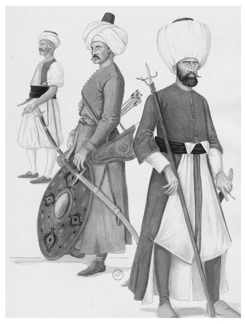

В этом обзоре мы опустим политические маневры при формировании Священной лиги и большую часть технических вопросов. Не приводим мы, естественно, и иллюстративный материал. Лишь для ввода в тему включим две иллюстрации художника Bruno Mugnai из книги Каппони «Victory of the West». На одной из них показаны солдаты Священной Лиги (слева направо венецианский Galeotto di Libertà, капитан итальянской галеры и испанский младший командир) и солдаты войск Османской империи (слева направо североафриканский корсар, янычар на корабельной службе и артиллерист - topçu)


Последнее крупное сражение с участием одних только галер произошло 7 октября 1571 года. Галеры стали основным героем этого сражения, наряду с их капитанами и полководцами. Но этот герой вышел на историческую сцену с прощальной гастролью.
О масштабах сражения можно судить по цифрам потерь. Средние по разным источникам, они составили у турок 30000 человек. Если брать не число нулей, а число человеческих жизней. то цифра представляется громадной. Настолько громадной, что она не была превзойдена на протяжении последующих трехсот с лишним лет, вплоть до бойни между англичанами и немцами под Лоо. В число убитых не включены, видимо, гребцы-рабы. Их жизни в то время ничего не стоили.
Более десяти тысяч убитых и скончавшихся от ран было и на галерах Священной лиги.
Из 30 тысяч погибших турок более половины были профессиональные солдаты (в том числе около шести тысяч янычар), опытные моряки и аркебузиры.
Число взятых в плен турок известно с точностью до одного человека. В документе, отражающем дележ добычи между победителями, содержались имена 3486 пленных. Но это, конечно, нижняя граница, не включающая тех, за кого невозможно было получить выкуп по причине их полнейшей бедности.
(Судьба пленных была печальна. В июне 1572 года венецианский Совет Десяти провел опрос находящихся в Венеции пленных турок с целью выявления среди них профессиональных моряков и аркебузиров. Все эти лица были казнены; цель такого бесчеловечного решения понятна: чтобы стать настоящим моряком или лучником требовалась порой вся жизнь. Венеция не хотела вновь увидеть этих людей в рядах своих противников-турок. В декабре этого же 1572 года посол Венеции при Мадридском дворе запросил секретную аудиенцию у короля Филиппа II, на которой информировал его о принятых в Венеции мерах и просил сделать то же самое с моряками-турками, находящимися в испанском плену. Филипп ответил, что он уже дал соответствующее поручение дону Хуану).
Общим местом во всех исследованиях, посвященных битве при Лепанто и ее последствиям, является утверждение, что в Патрасском заливе сошлись в смертном бою галеры Ислама и Христианства, что разгром турок в этом сражении означал торжество христианской Европы.
Но в этой кровопролитной схватке с флотом Османской империи выступил далеко не единый христианский европейский флот Не участвовали в этом сражении христианские Нидерланды, Англия и Франция. Более того, голландские «морские гёзы» под турецкими флагами участвовали в атаках на испанские корабли под лозунгом: «лучше турок, чем папа». А Елизавета английская, преданная папой анафеме, по замечанию хрониста тех времен, была «бòльшим врагом для Рима, чем для турок». Что касается Франции, то с благословения и при поддержке французского монарха, который приоритетным считал истребление гугенотов, а не противостояние воинственным мусульманам, турецкие корабли подступили под стены Марселя. Неудачей закончились также попытки привлечь в состав христианской Лиги силы Священной Римской империи.
Поэтому будем реалистами: при Лепанто столкнулись амбиции Испании и Османской империи, которым папа Пий V постарался придать религиозную окраску. Папское государство участвовало в Священной Лиге не только идеологически, но и вплне материально: оно арендовало у Великого герцога Тосканского двенадцать галер, передав их под командование Маркантонио Колонны. Погрузив в порту Чивитавеккья 1600 морских пехотинцев под командованием Онорато Гаетано, галеры папы первыми направились в назначенный пункт сбора Мессину. Отплыв из порта Чивитавеккья 19 июня и соединившись у острова Прочида с тремя галерами Мальтийского ордена (еще одного участника Лиги), эскадра под флагом папы прибыла в Мессину 19 июля 1571 года.
В состав Лиги волею судеб оказалась втянутой Венеция, надеявшаяся с помощью испанцев и папы отстоять Кипр.
Помимо Испании, Венеции, папского государства и Мальты в состав христианской Лиги вошли их сателлиты. Успехом закончились переговоры с сыном Великого герцога Тосканы Козимо I – Франческо де Медичи, который в то время являлся регентом герцогства. В благодарность за поддержку в получении титула Франческо предоставил в распоряжение Лиги четыре тысячи пехотинцев и восемьсот кавалеристов. Вслед за Тосканой лигу поддержал герцог Савойский, выделив в распоряжение Дона Хуана две тысячи пехотинцев и четыреста кавалеристов. Герцог Феррары предоставил союзникам тысячу пехотинцев и триста всадников; герцоги Пармы и Мантуи выделили чуть меньше сотни всадников каждый; герцог Урбинский отправил в состав Лиги тысячу пехотинцев. Такое же количество пехоты в ряды вооруженных сил Лиги выделили Республики Генуя и Лукка, кроме того добавив к ним по сто пятьдесят кавалеристов от каждого города. В общей сложности армия Священного союза получила от малых итальянских государств двенадцать тысяч пехотинцев и две тысячи сто кавалеристов.
Некоторые авторы, описывая сражение, по традиции рассматривают его по канонам баталий сухопутных армий. Однако, если мы оценим группировку сил Священной лиги и Османской империи, то у нас должно зародиться сомнение в том, что ставка делалась лишь на абордаж, на превращение морского боя в обычную схватку между солдатами, типичную для сухопутных сражений того времени. Галеры при Лепанто уже не являлись просто средством доставки воинов в определенную точку, где они должны были уничтожить живую силу противника, захватить их корабли и знамена и поделить захваченную добычу. Нет, в морское оперативное искусство того времени уже глубоко внедрились положения о использовании огневой мощи кораблей для нанесения невосполнимого ущерба противнику на дистанции, до вступления эскадр в непосредственное соприкосновение.
До нашего времени дошел датированный 9 сентября 1571 года документ, составленный почти за месяц до сражения, в котором был подробно разработан боевой порядок следования галер к месту битвы и боевой порядок непосредственно на сам момент начала сражения. Эти два порядка, кстати, очень мало отличались один от другого. Схема включала только 188 галер (в нее не вошли 11галер Джованни Андреа Дориа и несколько галер из областей, находящихся под влиянием Генуи; возможно, они еще не подошли к тому времени, а возможно там были какие-то политические соображения.).
В этом плане обращает на себя внимание особая роль, которая отводилась такому классу галер, как лантерны. Из 24 лантерн объединенного христианского флота лишь 3 были размещены на левом фланге, из них 2 – венецианских (кстати, у Венеции из 99 галер было только 4 лантерны). В центре находилось 13 галер-лантерн, причем 2 из них на правом крыле центральной группировки и одна – на левом, а оставшиеся десять размещались вокруг флагманской галеры Дон Хуана. На правом фланге объединенного флота находилось пять лантерн. Отсюда можно сделать вывод о предназначении лантерн: они являлись ядром ударной группировки, в случае Лепанто – Центра, предназначенного по замыслу дона Хуана для лобового удара по центру турецкого флота.
Как мы уже сказали, данный план дислокации галер от 9 сентября отличался от плана 7 октября. В последнем случае из 206 галер было 25 или 26 лантерн. Самый низкий процент галер этого типа был у венецианцев: 7 из 108, в то время как у испанцев и их сателлитов – 14 из 75. Это можно объяснить тем, что боеспособность стандартных венецианских галер была значительно выше за счет использования свободных гребцов, которые в бою брались за оружие наряду с солдатами морской пехоты.
Приблизительные оценки показывают, что в турецком флоте было минимум 21 лантерна из общего числа 230 галер и 70 галиотов, а вероятнее всего – 25-30. Как и в случае христианских галер, для обеспечения высокой скорости более тяжелых лантерн требовалось больше гребцов. Причем на лантернах мусульман использовались как правило свободные гребцы-арабы, а не невольники.
Превосходно вооруженные, укомплектованные и оснащенные лантерны согласно плану размещались в критических, фокусных точках предстоящего сражения.
Обратимся теперь к обстановке на Средиземном море, которая сложилась после торжественного подписания договора о создании Священной лиги в Риме 25 мая 1571 года. Еще до официального заключения договора, 23 или 24 мая, папа Пий V направил письма королю Испании Филиппу II и кандидату на пост главнокомандующего флотом Лиги Дону Хуану Австрийскому, призвав их, не откладывая, направить испанские галеры и войска на Восток. Если испанскому флоту удастся прибыть в Отранто к 20 июня, то открываются хорошие перспективы для последующих боевых действий против турок на море уже в этом году
Однако Дон Хуан не торопился. Он покинул Мадрид лишь 6 июня. Передвигался кортеж главнокомандующего очень медленно, с многочисленными остановками. В Барселону кортеж прибыл лишь через десять дней, 16 июня. Медленное выдвижение Дона Хуана определялось не национальными особенностями его характера, а политическим расчетом. Филипп II не оставлял надежды перенацелить основные силы Священной Лиги из Леванта на Бизерту, Алжир, Тунис и Триполи. Но союзники короля по лиге оставались непреклонными, и 26 июня Филипп вынужден был отдать приказ Дону Хуану следовать из Барселоны на Сицилию, в Мессину, через Геную, Тоскану и Неаполь, загружая по пути на галеры испанские терции из Италии, а также необходимое вооружение, боеприпасы, продовольствие. Филипп дал указание направить немецкие и итальянские полки, свободные от боевых задач в Милане, в Специю, где держать их в готовности к погрузке на галеры. Командующий флотом Неаполя Альваро де Басан получил приказ короля отправиться со своими галерами в Картахену, где погрузить на них боеспособные части из южных районов Испании.
В Барселоне Дон Хуан созвал совещание ближайших помощников по разработке всех деталей передвижения на Сицилию. Был отправлен приказ Альваро де Басану прибыть со своими галерами из Картахены в Барселону. Пополнение необходимых запасов продовольствия на галерах, собравшихся в гавани Барселоны, было поручено опытному мальтийскому рыцарю Жилю де Андрада, члену Военного совета при главнокомандующем. Командующему галерной эскадрой на Майорке Санчо де Лейва был отправлен приказ приготовить свои корабли к немедленному выходу в море и, не мешкая прибыть в Барселону.
11 июля 1571 года в соответствии с утвержденным планом перехода эскадра в составе 11 галер под командованием Санчо де Лейва начала движение вдоль побережья Испании к югу, с целью перекрыть Гибралтар и воспрепятствовать деятельности североафриканских пиратов на коммуникациях Священной лиги.
18 июля по всем галерам испанской эскадры были разосланы боевые приказы на предстоящий переход и 20 июля 48 галер под командованием Дона Хуана Австрийского начали движение к Генуе. Эскадра бросила якоря в генуэзской гавани 20 июля 1571 года.
Вернемся к плаванию Дона Хуана. Еще до своего отбытия из Мадрида Дон Хуан выслал вперед группу обеспечения, своеобразный походный двор, в составе 21 человека под общим руководством графа Приего. Группа готовила размещение главнокомандующего и все церемонии, связанные с его пребывание в том или ином месте.
В Генуе произошла очередная задержка испанского флота. Когда поведение главнокомандующего в глазах его подчиненных стало выглядеть совсем уж не соответствующим его миссии, Дон Хуан выделил из своей эскадры несколько галер под командованием Альваро де Басана и направил их в Неаполь.
Затем убыли эскадры Дориа и Хуана де Кардона, которые получили приказ загрузить итальянских и германских наемников в порту Специи. Наконец, наступила очередь и самого Главнокомандующего. В ночь с 31 июля на 1 августа Дон Хуан, сопровождаемый князьями Пармы и Урбино, погрузился на галеры и утром отбыл из Генуи. 2 августа Дон Хуан Австрийский был уже в Специи, затем проследовал в Чивитавеккья и, наконец, 9 августа испанская эскадра бросила якорь в Неаполе.
Эскадра Пия V также задержалась в пути. Ее долгое плавание объяснялось продолжительной стоянкой галер в Неаполе, где моряки и солдаты папских галер устроили кровавые разборки со своими союзниками по Лиге испанцами. Что же касается того факта, что мальтийские рыцари вошли в состав папской эскадры, а не венецианской, как предусматривалось соглашением о союзе, то он явился следствием судебного процесса над одним из рыцарей ордена св. Иоанна в Венеции, который закончился смертным приговором за преступление, которое мы сейчас бы назвали махинациями с валютой. Великий Магистр ордена посчитал это решение венецианского суда посягательством на привилегии Мальтийского ордена и передал свои галеры под командование папского адмирала.
После того, как мы проследили маршруты выдвижения к месту рандеву эскадр папского государства и испанцев, осталось разобраться с галерами Венеции.
В декабре 1570 года главнокомандующим (Capitano generale da mar) венецианским флотом был назначен Себастьяно Веньер. Известный политический деятель Синьории, представитель одной из самых старых патрицианских семей, Веньер, несмотря на преклонный возраст (он родился еще в прошлом, пятнадцатом, веке – в 1496 году) отличался неукротимой энергией и решительностью, иногда даже безрассудством, в своих действиях. Несмотря на то, что Веньер не имел практически никакого военного опыта, он был первоклассным администратором и решительным командиром, чего так не хватало венецианским военачальникам весной 1571 года.
Учитывая ограниченный военный опыт Веньера, Сенат Венеции назначил его заместителем по морским делам Агостино Барбариго. Он был на двадцать лет моложе, но не уступал Веньеру знатностью своего рода, приобрел большой опыт в дипломатических баталиях по морским делам и с юных лет командовал галерами.
18 апреля Себастьяно Веньер получил из рук Агостина Барбариго флаг капитан-генерала Венеции и поднял его над своим кораблем, формально став во главе венецианского военного флота. 11 июля Веньер с 58 галерами и шестью галеасами отплыл в Мессину. Небольшая скорость галеасов – они приводились в движение по системе гребли alla sensile , имея всего по три гребца на каждой банке, - тормозила передвижение всей эскадры. 23 июля эскадра Веньера вошла на рейд Мессины, где ее встречал прибывший четырьмя днями раньше командующий галерами папы. Дожидаться испанской эскадры им придется еще целый месяц.
Дон Хуан, получив из рук кардинала Гранвелля 14 августа 1571 года в Неаполе штандарт Священной лиги, начал готовить испанский флот к отплытию на Сицилию. Эскадра вышла из Неаполя 20 августа, а уже вечером 23 августа артиллерия Мессины и стоявших уже там на рейде галер Лиги приветствовала Главнокомандующего и прибывшие с ним тридцать пять испанских галер.
По всем канонам морской стратегии и тактики галерных соединений Средиземноморья приготовления и сборы союзных флотов в сезон 1571 года начались с запозданием, когда период, наиболее подходящий для масштабных морских операций, был уже в самом разгаре. Тем самым турецкому флоту была предоставлена свобода действий, которой он и воспользовался.
Османская империя имела на Средиземном море густую сеть шпионов и наблюдателей, сравнимую, с сетью венецианской разведки, если не превосходящую ее. В начале 1571 года, когда не был еще подписан договор о создании Священной лиги, турки, предвидя дальнейшее развитие событий, предприняли ряд активных превентивных мер. Эти шаги должны были опередить будущие возможные действия христиан, которые, как считали в Стамбуле, будут направлены на снятие блокады Фамагусты. В середине февраля на усиление родосской эскадры было направлено двадцать галер с задачей отслеживать деятельность венецианских военно-морских сил на Крите. Все соединения турецкого флота в этом регионе были поставлены под единое командование правителя Александрии Шулуч Мехмед-паши. 21 марта Константинополь покинули еще тридцать галер под командованием Муэдзинзаде Али-паши. К концу марта они достигли Кипра, где и оставались до середины мая. Высадив войска и грузы, необходимые для осады Фамагусты, Али-паша во главе эскадры в составе пятидесяти пяти вымпелов, направился в порт Каристос (Castelrosso), расположенный на южной оконечности Негропонта (Эвбеи). Там он соединился с эскадрой второго визиря Пертев-паши, прибывшей из Константинополя и насчитывающей 124 галеры. Пертев-паша был назначен старшим флагманом объединенной эскадры. Одновременно в Скопье (Македония) сконцентрировались турецкие войска под командованием третьего визиря Ахмед-паши, готовые к проведению совместной операции с силами флота против венецианских владений в Греции. Несомненно, цель кампании османов на 1571 год состояла не только в захвате Кипра, но и в нанесении мощного удара в Адриатике и, при удачном развитии событий, по самой Венеции. Отсюда становятся понятными колебания венецианского командования перед отправкой флота в Мессину: сильна была позиция тех, кто предлагал для защиты Венеции отправить галеры в Бриндизи.
Капудан-паша Муэдзинзаде Али в Каристосе задержался на несколько недель для ремонта и приведения в порядок своих галер, а также в ожидании прибытия новых подкреплений. Особенно он рассчитывал на галеры алжирского паши Улудж Али (Uluç Ali). Улудж Али по пути собрал своих собратьев-корсаров с анатолийского побережья и благополучно прибыл на Эвбею, где после его прибытия численность турецкого флота достигла 250 кораблей и судов различных типов, плюс около двух десятков галер, которые остались для обеспечения потребностей осадной армии под Фамагустой. У капудан-паши был строгий приказ: «Найти и немедленно атаковать флот неверных во имя спасения чести нашей веры и нашего государства». Все еще сопротивляющаяся Фамагуста и недавний прорыв галер Кверини на Кипр заставляли принимать все меры, чтобы сорвать возможные планы христиан.
Лучшая защита это нападение. Муэдзинзаде Али-паша хорошо знал это золотое правило и поэтому нанес несколько ударов своих галерных эскадр по Криту. В результате молниеносного рейда в залив Суда турецкие галеры захватили пленников в прибрежных поселениях, от которых османы получили сведения о точных силах венецианского флота, базировавшихся на острове. Капудан-паша принял дерзкое решение о разделе своих сил на две части, одна из которых была нацелена на La Canea (совр. Ханья) и Ираклион, вторая, под командованием Улудж Али, получила задачу захватить крепость в Rhetimo (современный Ретимнон).
20 июня Муэдзинзаде Али попытался захвать Ираклион с ходу, внезапной атакой. Однако бдительность проведитора Кверини позволила отразить эту попытку и, войска капуда-паши, понеся большие потери, вынуждены были отойти. Безуспешной оказалась и попытка овладеть находящейся поблизости крепостью Turlurù. Положение турецкого флота у побережья Крита осложнил сильный шторм, в результате которого двенадцать турецких галер снесло на мелководье, а три из них так и вообще разнесло в щепки.
Улудж Али был, как всегда, более удачлив. Ему удалось разграбить и сжечь Ретимнон, захватив там двадцать два венецианских орудия.
Муэдзинзаде Али-паша после этих первых атак на венецианские владения на Крите отвел и переформировал свой флот, затем направил галеры к островам Корфу, Закинтос и Кефалония. Турецкий адмирал трезво рассудил, что его сил не хватит для быстрого захвата крепости Корфу, поэтому он ограничился короткими вылазками на побережье венецианских владений в Адриатике, уничтожая всех, кто не успел укрыться за стенами крепостей. Лишь одна из крепостей Венеции – Сопот – была подвергнута осаде и, после жестокого боя с многократно превосходящими силами противника, сдалась на милость победителей. Но милости не последовало и гарнизон Сопота был полностью уничтожен.
Одновременно турецкие галеры под командованием Улудж Али крейсировали в водах Адриатики в поисках венецианских кораблей. Им удалось остановить транспортное судно Венеции Moceniga, на борту которого находилось 800 солдат, предназначенных для усиления гарнизона Корфу. Бой продолжался одиннадцать часов, судно было захвачено лишь после того, как половина из всех находящихся там воинов погибла. После этого успеха алжирский бейлербей направился к Дубровнику, где укрылась от его преследования венецианская галера. Жители Рагузы, ссылаясь на свой нейтралитет, отказались выдать корабль, но тем не менее снабдили османского флотоводца подробной информацией о состоянии флота Священной лиги, после чего Улудж Али вернулся к основным силам капудан-паши.
Корсары Улудж Али и Кара Ходжа со своими галерами получили приказ проникнуть как можно ближе к столице Республики, нарушая венецианские морские коммуникации в этом жизненно важном для Светлейшей районе. Кара Ходжа хорошо знал эти воды. Пятью годами ранее он занимался здесь морским разбоем. Активные действия турецкого флота на подступах к Венеции при вялом сопротивлении венецианцев продолжались вплоть до середины сентября. Турки в ходе этих операций захватили до 7000 жителей этих районов, отправив их на галеры в качестве гребцов. Одновременно галеры Кара Ходжи вели по заданию капудан-паши активный сбор информации о флоте Лиги. Здесь мы вынуждены отметить позорную страницу в биографии этого дерзкого корсара. Перекрасив свои галиоты в черный цвет, Кара Ходжа провел глубокую морскую разведку, и даже сумел ночью проникнуть в порт Мессины. Он насчитал 140 галер, и эту цифру сразу же доложил верховному командованию турок. Роковая ошибка, почти в два раза занизившая истинные силы христианского флота. А произошло это из-за того, что турецкие шпионы не заметили эскадру Барбариго, которая стояла на якоре во внутренней гавани Мессины.
Муэдзинзаде Али-паша, капудан-паша турецкого флота, в середине сентября принял решение направить все свои эскадры в Превезу, где провести тщательную подготовку кораблей и экипажей к решительному сражению с объединенным флотом христиан.
23 августа 1571 года, после прибытия эскадры Дона Хуана, в Мессине собрались командующие и основные силы всех участников Священной лиги. На следующий день состоялось первое совещание командования объединенного флота Лиги. Дон Хуан сообщил, что он ожидает скорого прибытия эскадр Дориа и де Басана, после чего численность испанских галер составит 84 единицы. На их борту находятся 7 000 испанских, 7 000 германских и 6 000 итальянских солдат. Маркантонио Колонна отметил, что у него 12 полностью оснащенных галер в хорошем состоянии. Доклад Веньера был не таким оптимистичным. Он ожидал прибытия дополнительных галер с Крита, однако экипажи венецианских галер укомплектованы не полностью, он надеется на вице-короля Неаполя, который обещал поставить ему солдат и гребцов, а также недостающий провиант. Кроме того, 5000 человек обязался предоставить Помпео Колонна и другие капитаны. Во всяком случае, проблема нехватки личного состава стоит на этот раз не так остро, как в прошлую кампанию. После того, как командующие союзных эскадр доложили обстановку, было принято решение отложить обсуждение плана предстоящих действий до прибытия де Басана, Дориа и критской венецианской эскадры. Пока же отправить две галеры под командой мальтийского рыцаря испанца Жиля де Андрада, капитана флагманской галеры Дона Хуана, и венецианца Кико Пизани для ведения морской разведки.
На следующий день началась череда пышных шествий по украшенным улицам Мессины, молебнов, приемов и балов, которая, казалось, полностью поглотила все время Дона Хуана. Никто всерьез не мог представить, что всего лишь месяц спустя придется схватиться в смертном бою с турецкой армадой, все расчеты делались на то, что союзный флот зазимует в Мессине и лишь весной следующего года начнет активные боевые действия. И это ощущение господствовало не только в среде военного командования, но и у политических стратегов в столицах союзников. В архивах Венеции хранится письмо Сената послу Светлейшей в Испании, в котором Синьория просит своего представителя убедить Филиппа II в необходимости дать указание Дону Хуану о зимовке в Мессине или другом месте на Сицилии. Об этом же свидетельствует и тот факт, что все чеки, направляемые на содержание венецианского флота в предстоящий период, подразумевали их оплату лишь в Мессине или Палермо. Мудрый старый дон Гарсия де Толедо писал Дону Хуану из своего поместья в Пизе, что ввязываться сейчас в большое сражение с турецким флотом, видимо, не в интересах испанского короля. И только папа Пий V не уставал повторять: христианская армада должна уже в этом году разгромить турецкий флот.
В этой непростой обстановке Дон Хуан все больше укреплялся в мысли дать генеральное сражение флоту османов. В своем письме дону Гарсия де Толедо, отправленном 6 сентября, Дон Хуан информировал своего друга и советчика, что 2 сентября в Мессину прибыли галеры Джованни Андреа Дориа (11 единиц), 5 сентября – эскадра под командованием Альваро де Басана (30 галер). «Их появление доставили мне глубокое удовлетворение, так как задержка с их прибытием очень мучила меня.» Главнокомандующий начал планирование выхода из Мессины объединенного флота на поиск турецких галер ориентировочно на 9-10 сентября.
В аввизо из Мессины от 13 сентября сообщалось, что парусные корабли союзного флота готовы к выходу из гавани, в ближайшее время в готовность будут приведены и галеры. Дон Хуан уже находится на борту своей флагманской галеры (galera reale). Флот намерен отправиться к Корфу, где наиболее вероятно находится турецкий флот. Состав христианского флота, как он описывается в аввизо: 209 галер, 6 галеасов, 27 больших парусных кораблей «и много малых судов». На борту кораблей флота находится 28 000 пехотинцев-наемников, 2000 добровольцев. Бесполезные в бою люди (gente inutile) оставлены на берегу, туда же отправлена вся собственность членов экипажа и солдат, чтобы на замедлять движение кораблей флота и освободить место для боевого снаряжения.Однако в назначенный срок флот в море не вышел: шли затяжные дожди. Выход был намечен, как только погода улучшится.
Задержка выхода флота Лиги была на руку турецким эскадрам. Капудан-паша уже получил информацию о концентрации сил противника в Мессине и принял срочные меры, чтобы как можно скорее покинуть Адриатику и сконцентрировать в одном месте свои разрозненные силы, перегруппировать их и обеспечить всем необходимым для встречи грозного противника. Осада всех венецианских крепостей в Далмации была снята, войска спешно возвращались на корабли.
Остановимся в этом обзоре на том моменте, когда флот Священной лиги был в готовности покинуть Мессину и выдвинуться на поиск противника, а флот Османской империи срочно собирал свои рассеянные силы, «чтоб не пропасть поодиночке». О том, что последовало за этим, лучше прочитать непосредственно в последних постах, это не очень утомительное чтение, я думаю.